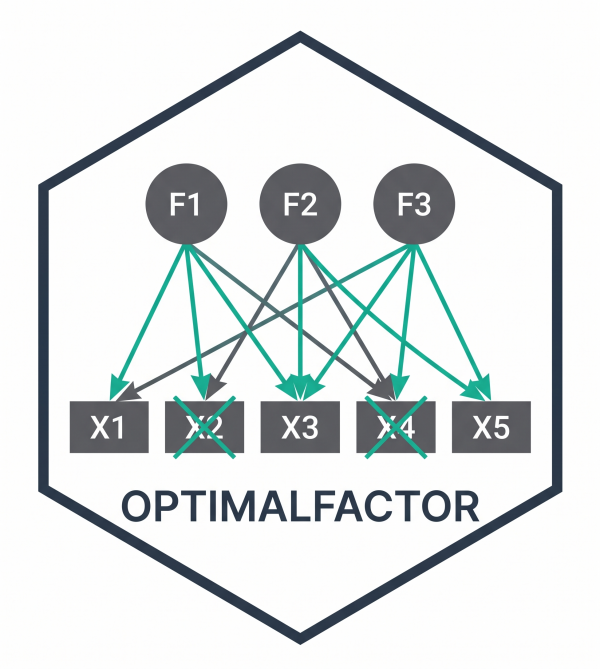

Resampling Stability of the Item Assignment in a Confirmatory Model
Source:R/cfa_item_stability.R
cfa_item_stability.RdChecks, without leaving the confirmatory framework, whether each item of a CFA model would stay on its factor in another sample. The model is refitted on many subsamples and, one item at a time, the item is moved to each of the other factors. The item "lands" on the factor whose model fits best (lowest chi-square). The proportion of subsamples in which it lands on the factor the model assigns is its stability.
Unlike item_stability, which reruns efa_boosting() and
therefore extracts factors on every resample, no exploratory step is
involved: the factors are always those of the model, and only the place of
one item changes at a time. This makes it suitable for checking a
respecified CFA model, such as one in which some items were moved between
factors, against the classic objection that the respecification
capitalizes on chance (MacCallum, Roznowski & Necowitz, 1992).
Usage
cfa_item_stability(
data,
model,
R = 200,
prop = 0.8,
threshold = 0.75,
estimator = "WLSMV",
ordered = TRUE,
seed = NULL,
n_cores = 1,
verbose = TRUE
)
# S3 method for class 'cfa_item_stability'
print(x, digits = 3, ...)Arguments
- data
Data frame with the item responses. Columns not used by the model are ignored.
- model
The model, either as a named list (factor name -> character vector of items) or as lavaan syntax with
=~lines only. At least two factors are required, and every item must load on one factor only.- R
Number of subsamples. Default 200.
- prop
Proportion of cases drawn in each subsample, without replacement. Default 0.8.
- threshold
Stability from which an item is read as stable. Default 0.75.
- estimator
Estimator passed to
lavaan::cfa(). Default"WLSMV".- ordered
Treat the items as ordinal. Default
TRUE.- seed
Optional integer seed for reproducibility; NULL (default) leaves the RNG untouched.
- n_cores
Number of parallel workers. Default 1 (sequential). Values above 1 use a PSOCK cluster and require the package to be installed.
- verbose
Print progress. Default
TRUE.- x
A
cfa_item_stabilityobject.- digits
Number of digits for the printed values. Default 3.
- ...
Ignored.
Value
An object of class cfa_item_stability: a list with
itemsone row per item:
item,factor(the assigned factor),stability,other(the factor it lands on most often when it leaves its own),lambda_own(median standardized loading on its factor),lambda_moved(median loading when moved to its best alternative),delta_chisq(median chi-square of the best alternative minus that of the model: positive values favour the assigned factor),n_validandreading.fitone row per subsample with the fit of the model as specified (
cfi,tli,rmsea,srmr) andphi_max, the largest correlation between factors.summarysuccess rate, median
phi_maxand the proportion of subsamples withphi_maxbelow .90.model,settings,callthe model as a named list, the settings used and the call.
Details
On each subsample the function fits:
the model as specified, recording its fit and the largest correlation between factors; and
for each item, one model per alternative factor, identical to the specified one except that the item loads on that factor instead of its own.
The item is moved, not duplicated, so every alternative has the same
degrees of freedom as the specified model and their chi-squares (the
unscaled test statistic, from the same subsample) compare directly. The
item keeps its factor unless an alternative has a lower chi-square. Freeing
a cross-loading instead would be fragile: with highly correlated factors it
leaves the item's loadings nearly unidentified and yields inadmissible
estimates. An alternative that would leave a factor with fewer than two
items is not considered.
Subsampling is without replacement, because duplicated cases distort the
polychoric correlations that WLSMV relies on (see item_stability).
The subsamples are drawn before any fitting, so results are reproducible
with seed and identical for any n_cores.
Each item is read as "stable" when its stability is at least
threshold, as "prefers other factor" when it is at most
1 - threshold, and as "unstable" in between.
References
MacCallum, R. C., Roznowski, M., & Necowitz, L. B. (1992). Model modifications in covariance structure analysis: The problem of capitalization on chance. Psychological Bulletin, 111(3), 490-504. doi:10.1037/0033-2909.111.3.490
Examples
# \donttest{
data(Data_Expectativas)
model <- list(F1 = paste0("EAF", 1:5), F2 = paste0("EAF", 6:10))
st <- cfa_item_stability(Data_Expectativas, model, R = 5, seed = 1)
#> Fitting 5 subsamples sequentially...
#>
[ ] 0% (0/5) elapsed 0s left ~?
[===== ] 20% (1/5) elapsed 3s left ~13s
[========== ] 40% (2/5) elapsed 6s left ~9s
[================ ] 60% (3/5) elapsed 9s left ~6s
[===================== ] 80% (4/5) elapsed 12s left ~3s
[==========================] 100% (5/5) elapsed 15s left ~0s
st
#>
#> CFA item-assignment stability
#> ------------------------------------------------------------
#> Subsamples: 5 of n = 80 (80% of 100), 100% converged
#> Largest interfactor correlation: median 0.969; below .90 in 0.0% of subsamples
#>
#> Proportion of subsamples in which each item fits best on its own factor (stable >= 0.75):
#> item factor stability other lambda_own lambda_moved delta_chisq n_valid
#> EAF1 F1 0.8 F2 0.867 0.861 0.05 5
#> EAF2 F1 0.8 F2 0.711 0.708 0.82 5
#> EAF3 F1 0.6 F2 0.741 0.737 0.03 5
#> EAF4 F1 0.0 F2 0.872 0.866 -1.76 5
#> EAF5 F1 0.8 F2 0.701 0.689 0.76 5
#> EAF6 F2 0.0 F1 0.565 0.569 -5.86 5
#> EAF7 F2 0.8 F1 0.733 0.733 0.61 5
#> EAF8 F2 0.4 F1 0.928 0.910 -1.62 5
#> EAF9 F2 0.6 F1 0.845 0.838 0.30 5
#> EAF10 F2 0.0 F1 0.772 0.773 -0.73 5
#> reading
#> stable
#> stable
#> unstable
#> prefers other factor
#> stable
#> prefers other factor
#> stable
#> unstable
#> unstable
#> prefers other factor
#>
#> Items to review: EAF3, EAF4, EAF6, EAF8, EAF9, EAF10
st$items
#> item factor stability other lambda_own lambda_moved delta_chisq n_valid
#> 1 EAF1 F1 0.8 F2 0.867 0.861 0.05 5
#> 2 EAF2 F1 0.8 F2 0.711 0.708 0.82 5
#> 3 EAF3 F1 0.6 F2 0.741 0.737 0.03 5
#> 4 EAF4 F1 0.0 F2 0.872 0.866 -1.76 5
#> 5 EAF5 F1 0.8 F2 0.701 0.689 0.76 5
#> 6 EAF6 F2 0.0 F1 0.565 0.569 -5.86 5
#> 7 EAF7 F2 0.8 F1 0.733 0.733 0.61 5
#> 8 EAF8 F2 0.4 F1 0.928 0.910 -1.62 5
#> 9 EAF9 F2 0.6 F1 0.845 0.838 0.30 5
#> 10 EAF10 F2 0.0 F1 0.772 0.773 -0.73 5
#> reading
#> 1 stable
#> 2 stable
#> 3 unstable
#> 4 prefers other factor
#> 5 stable
#> 6 prefers other factor
#> 7 stable
#> 8 unstable
#> 9 unstable
#> 10 prefers other factor
# }